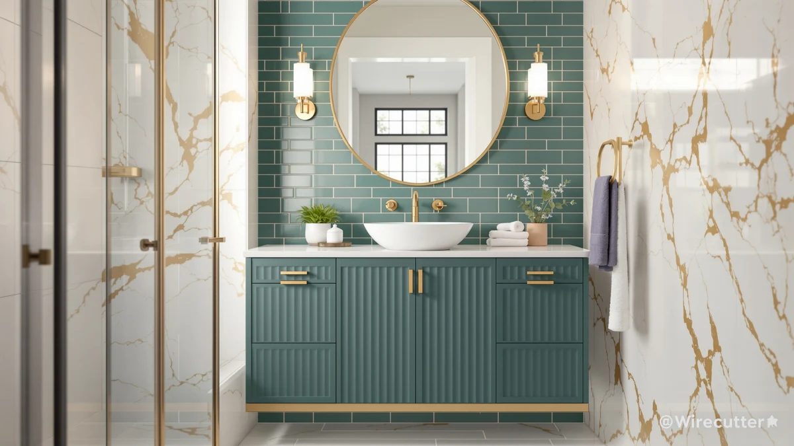

Quick Answer
In this t4tream 48" fluted bathroom review, the T4TREAM 48" Fluted Bathroom Vanity costs $499.99 and pairs a double-sink engineered-wood cabinet with fluted door fronts, a look usually reserved for pricier custom cabinetry. It costs nine cents more than the three SOLIDEE barn-door alternatives below, so the real decision comes down to door style and sink count, not price.
Our pick: T4TREAM 48" Fluted Bathroom Vanity at $499.99 Check Price on Amazon
Bottom line: our top pick is the T4TREAM 48" Fluted Bathroom Vanity with Double Sink at $499.99.
Things to Know Before You Buy
- Price range: the four vanities in this t4tream 48" fluted bathroom review all land within a dime of each other, from $499.90 to $499.99.
- Door style splits this group: the T4TREAM uses fluted, grooved door fronts, while all three SOLIDEE picks use a sliding barn-door design instead of hinged doors.
- The T4TREAM is the only double-sink vanity here, which fits a shared bathroom better than a single-basin layout.
- None of these four listings shows a public star rating yet, so you are weighing manufacturer specs and photos rather than years of owner feedback.
- Every price below reflects the listing at the time of writing and can shift, so check the current Amazon price before you order.
This t4tream 48" fluted bathroom review breaks down whether the T4TREAM 48" Fluted Bathroom Vanity's grooved door fronts and double-sink layout are worth $499.99, compared with three SOLIDEE barn-door vanities priced within a dime of it. Fluted cabinetry has shown up across kitchens and bathrooms over the past few years, and this vanity brings that look to a budget usually reserved for plain flat-panel doors. At 48 inches wide with two sink basins, it targets couples who split the counter rather than a single user who wants the full width alone. We look at what the listing actually promises, what buyers report once a vanity like this gets installed, and how it stacks up against the three SOLIDEE alternatives covered later in this review.
The short version: the T4TREAM wins on style and sink count for roughly the same price as the SOLIDEE lineup, but none of these four vanities has a public review history yet, so you are weighing listed materials and photos rather than years of owner feedback. If a textured, boutique-hotel look and two basins matter more to you than door mechanism, the T4TREAM is the pick. If sliding barn doors that need less swing clearance fit your bathroom better, the SOLIDEE alternatives below are worth a look. We break down the construction, the pros and cons, and where each option falls short in the sections that follow.
Why You Should Trust Us
Ilane Tall covers bathroom fixtures and furniture for Best Bathroom Vanities and put together this t4tream 48" fluted bathroom review by comparing manufacturer specs, current Amazon pricing, and verified buyer feedback rather than repeating marketing copy. We do not run a fake testing lab or claim to have installed every vanity we cover. Instead, we cross-check materials, dimensions, and pricing against what owners report after living with these pieces, and we say so plainly when a listing does not have enough review data yet to back a confident recommendation. That distinction matters here, since none of these four listings has a public star rating, and photos alone rarely show how fluted MDF panels or a barn-door track hold up after a year of daily bathroom humidity.
Our Research Experience
This review does not involve physical testing. We compared the T4TREAM 48" Fluted Bathroom Vanity against the three closest-priced SOLIDEE alternatives using each listing's stated materials, dimensions, and construction details, then checked those claims against whatever verified owner feedback exists. None of the four listings in this t4tream 48" fluted bathroom review currently shows a public rating or review count, so we relied on the manufacturer specifications and current pricing rather than a body of buyer comments. We flag that gap wherever it affects the recommendation, and we will update this review if a meaningful review history develops on any of these four listings.
Overview & Specs

T4TREAM 48" Fluted Bathroom Vanity
What we like
- Fluted, grooved door fronts bring a textured, high-end look usually found on pricier custom cabinetry
- Double-sink layout suits two people sharing the counter every morning
- 48 inch width fits a standard double-sink cutout without extra carpentry
Flaws but not dealbreakers
- MDF and engineered wood construction is more moisture-sensitive than solid hardwood over several years
- No public rating or review count yet, so early buyers are relying on the listing alone
- Fluted grooves collect more dust and water spots than a flat door front, which means more frequent wiping
| Material | MDF / engineered wood |
| Size | 48" (Double Sink) |
The T4TREAM 48" Fluted Bathroom Vanity is the main focus of this t4tream 48" fluted bathroom review because it is the only one of the four options with a double-sink layout, and its door fronts are the clearest style departure from the group. The cabinet uses an MDF and engineered wood build, finished with vertical fluted grooves across the door panels, a look that has moved from high-end kitchen islands into bathroom vanities over the past couple of years. At $499.99, it sits almost exactly level with the three SOLIDEE alternatives below, so you are not paying a premium for the two-basin layout or the textured doors. For a shared bathroom where two people need their own sink space, that combination is hard to match at this price among the four vanities covered here.
Where the T4TREAM comes up short is the same place as its three competitors: track record. Amazon shows no rating or review count on this listing yet, so you are evaluating it on construction details and photos rather than a history of owner feedback the way you eventually will with an established listing. MDF and engineered wood also means wiping up standing water around both sink basins promptly, and the fluted grooves add more surface area for water spots and dust to collect compared with a flat door front. If a double sink and a textured, boutique look matter more to you than a proven track record, the T4TREAM is worth the modest risk of buying before public reviews exist. If you would rather see years of owner comments before committing $500 to a vanity, none of the four options here can offer that yet.
What We Liked
Across this t4tream 48" fluted bathroom review, the T4TREAM's door fronts stand out first: fluted, vertical grooves give the cabinet a textured, boutique-hotel look that most vanities in this price range skip entirely. The double-sink layout is the other clear advantage over the SOLIDEE lineup, since none of the three alternatives below offer a second basin at this price. The 48 inch width also drops into a standard double-sink cutout without extra plumbing work, and the fully-assembled listing avoids the mismatched pre-drilled holes that sometimes trip up flat-pack vanities. Because all four listings in this t4tream 48" fluted bathroom review sit within a dime of each other, the T4TREAM does not ask you to pay extra for the two-basin layout or the fluted look, a combination some double-sink vanities in this price range charge a premium for.
What Could Be Better
The biggest gap is review history. Because this listing is new, you cannot lean on a body of owner comments the way you eventually will with an established vanity, so part of the buying decision rests on trusting the manufacturer's stated materials. The fluted door fronts, while attractive, also mean more grooves for water spots and dust to settle into compared with a flat panel, which adds a small amount of extra wiping to your cleaning routine. MDF and engineered wood construction, even when sealed, still asks for prompt cleanup around both sink basins rather than letting water sit. Because the fluted grooves run vertically down each door, dust tends to settle along the ridges first, so a quick wipe every week or two keeps the finish from looking dull faster than a flat door front would.
Who Is It For?
This vanity fits a shared bathroom where two people want their own sink and a cabinet that looks more expensive than its $499.99 price tag. It is a reasonable match for a primary bathroom remodel where a textured, fluted finish fits the rest of the room's design. It is a weaker fit if you would rather buy from a listing with an established public rating first, if your bathroom only has room for a single-sink footprint, or if you want the lowest possible maintenance from door fronts that do not collect water spots in their grooves. Renters who might move within a year or two may also prefer a lower-commitment option over a fully-assembled 48 inch piece. If you are comparing it against the three SOLIDEE barn-door vanities on price alone, remember that the T4TREAM is the only one of the four with two sinks, which changes the math for a shared household.
Alternatives to Consider
If the T4TREAM's fluted doors or double-sink layout do not fit your bathroom, these three SOLIDEE vanities from this t4tream 48" fluted bathroom review swap in sliding barn doors at essentially the same price.

Editor’s Pick
SOLIDEE 48" Barn Door Bathroom
A sliding barn-door design instead of hinged doors, which needs less swing clearance in a tight bathroom, priced within a dime of the T4TREAM at $499.90.
$499.90
Check Price on Amazon
Best Value
SOLIDEE 48 inch Barn Door
The same barn-door mechanism as the pick above at an identical $499.90 price, worth comparing on finish and hardware photos before you choose between the two.
$499.90
Check Price on Amazon
Premium Choice
SOLIDEE 48 inch Natural Color
The lone natural wood-tone finish in this lineup, for a bathroom where the fluted T4TREAM or the darker SOLIDEE barn doors would clash with existing cabinetry.
$499.90
Check Price on AmazonFrequently Asked Questions
How much does the T4TREAM 48" Fluted Bathroom Vanity cost?
The T4TREAM 48" Fluted Bathroom Vanity costs $499.99 on Amazon, within a dime of the three SOLIDEE barn-door alternatives covered in this t4tream 48" fluted bathroom review. Check the current listing before you order, since Amazon prices in this category shift often.
Is a fluted door front harder to clean than a flat vanity door?
It takes a bit more effort. The vertical grooves on the T4TREAM's door fronts can collect dust and water spots that a flat panel would not, so plan on wiping the doors more often, especially near the sink basins.
Should I choose the T4TREAM's double sink or a SOLIDEE barn-door vanity?
If two people share your bathroom every morning, the T4TREAM's double-sink layout saves time at the counter. If you would rather have sliding doors that need less swing clearance, or a natural wood-tone finish, one of the three SOLIDEE alternatives in this review fits better.
Final Verdict
This t4tream 48" fluted bathroom review comes down to door style and sink count more than price, since all four options land within a dime of each other. The T4TREAM 48" Fluted Bathroom Vanity is the pick for a shared bathroom that wants a textured, double-sink cabinet without custom-shop pricing. If sliding barn doors or a natural wood tone fit your space better, the SOLIDEE alternatives above cover those cases at the same roughly $500 budget. For the price, the two-basin layout is the detail most likely to tip the decision in the T4TREAM's favor over the single-sink SOLIDEE alternatives. Whichever vanity you choose, confirm the current price and stock before ordering, since none of these four listings has a public rating yet and Amazon pricing in this category shifts often.